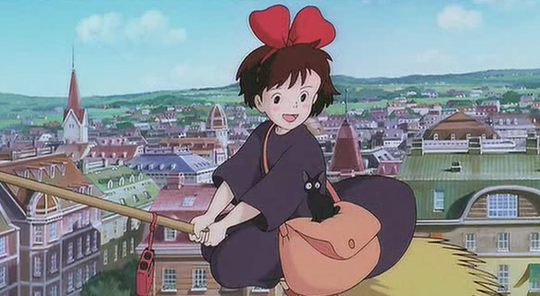
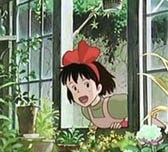
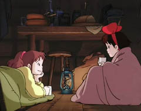
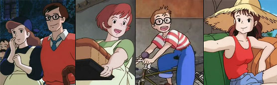
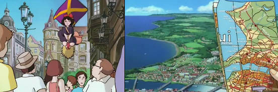
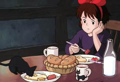
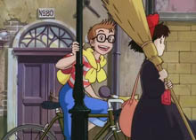
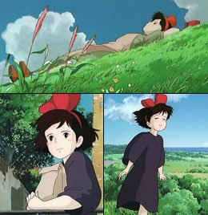
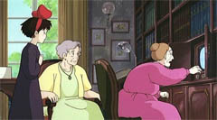
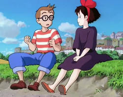

Hayao Miyazaki · Estudio GHIBLI ·
Isao Takahata
Kiki's delivery
service
Kiki: servicio de entregas
Majo no Takkyuubin (Kiki's
delivery service) (también «Nicky,
la aprendiz de bruja»)
1989 · Película · 98 minutos
Dirección: Hayao Miyazaki
Música: Joe Hisaishi
Producción: Isao Takahata
Guión: Hayao Miyazaki,
sobre libro de Eiko Kadono

A los trece años, Kiki
debe cumplir con el ritual
de noviciado de bruja: dejar
su hogar paterno para establacerse una temporada en una ciudad lejana,
en companía
de su gato negro. Este largometraje,
cuarto de Miyazaki en Ghibli, sigue los esfuerzos de Kiki para hacerse
un lugar en su nuevo mundo, trabajando como mensajera
aérea a domicilio.
Ambientación: ciudad marítima,
indeterminada pero
claramente europea, a mediados del siglo XX.
Sinopsis:
Los primeros minutos, antes de los títulos iniciales, relatan la
decisión y la
partida de Kiki, una noche de luna llena. Lo que sigue puede dividirse
en cuatro partes,
más un breve epílogo tras los títulos finales:
Llegada y establecimiento en la ciudad: Aunque los
comienzos no son fáciles (un incidente con un policía, la indiferencia
de la mayoría, las dificultades para encontrar alojamiento y el primer
amago de desaliento), Kiki logra la amistad de una panadera (Osono) que
le ofrece un desván para dormir. A cambio, y mientras arranca su
proyecto
de servicio de delivery, Kiki ayuda al matrimonio (esperando un hijo en
breve) con el negocio.
El servicio de delivery: Kiki logra sus primeros
encargos y va tomando confianza.
Un accidente en el primer envío -en el que su gato Jiji debe hacerse
pasar por un juguete de peluche- conoce a Úrsula, la joven pintora que
vive sola en una cabaña
del bosque. También gana el aprecio de una anciana, y la invitación de
Tombo -un muchacho
con quien ha tenido algunos encuentros poco afortundos- a una fiesta.
Una tormenta
de lluvia le impide asistir y la mojadura le ocasiona un resfrío.
Problemas: maquinaciones de la
panadera mediante,
Kiki y Tombo logran al fin
amigarse. Pero ella aún se siente retraída y fuera de lugar ante sus
amistades juveniles. Pronto
descubre espantada que sus poderes de bruja flaquean: ya casi no puede
volar en la escoba ni comunicarse
con su gato. La compañía de Úrsula le sirve de contención y le hace
reflexionar
sobre el sentido de sus rol de bruja.
Al rescate: Tombo queda involucrado en un
accidente aéreo, y Kiki se ve urgida
a recuperar sus poderes para tratar de salvarlo: ocasión también de
superar sus miedos
y lograr relacionarse con la gente.
Personajes:
Kiki y su gato Jiji son los protagonistas excluyentes. La bruja novicia
es animosa y amable,
pero no sin desánimos y timideces. El gato tiene una personalidad menos
avasallante en la versión
original, en los idiomas inglés y español acusaron sus rasgos cómicos y
burlones.

Los
padres de Kiki sólo aparecen al comienzo y fugazmente en el
epílogo. Es de la madre de quien Kiki hereda su condición de bruja.
En la ciudad, el matrimonio de la panadería son quienes le
brindan hospitalidad. Sobre todo ella,
Osono, embarazada, es muy afectuosa y jovial. El panadero es el
hombretón
callado, aparentemente hosco pero en el fondo un buenazo.
Tombo es el muchachito de la película; fanático de la
aviación, queda fascinado con la llegada
de Kiki; pero sus modos atolondrados y ruidosos no facilitan
el acercamiento.
También están Úrsula, la joven artista, bohemia que vive sola en una
cabaña en el bosque.
Y la anciana, abuela de la niña desamorada, que vive sola con su
asistenta.

Puede
agregarse otro personaje de importancia: la
ciudad. En su conjunto (paisaje, edificios y habitantes) es una
presencia
viva que se impone, signo del mundo en el que Kiki debe
insertarse. No parece tratarse
de una ciudad real en particular, sino de un rejuntado de varias
ciudades
de occidente: sobre todo Estocolmo (pero también Lisboa, Nápoles y
otras). La fascinación de Kiki al descubrirla
es reflejo, probablemente, de las impresiones de Miyazaki, quien había
descubierto Europa en una visita a Suecia, en 1970.
Como
en España la
palabra "Kiki" tiene connotaciones sexuales,
lo han cambiado a "Nicky". Esas connotaciones no existen en
América, y afortunadamente el doblaje mexicano conserva el nombre
original (como lo conservamos acá).
Ambos doblajes españoles (el de España y el de
México)
se basan en el doblaje inglés, que añade muchos parlamentos
inexistentes
en el original (ese miedo a los silencios...) y transforma
al gato Jiji en el clásico personaje burlón y parlanchín. Una lástima
—aunque
algunos lo prefieren así.
Salvo esto, ambos doblajes están bastante bien, sobre todo el mexicano;
pero
este es el más difícil de hallar.
Mención aparte merece el doblaje italiano, fiel al original japonés.
En DVD hay una sola versión legal disponible, por lo
que sé,
de Buenavista, con
el doblaje español de España. Calidad pasable, y algunos pocos extras
(los storyboards o
bocetos) pero, además de los mencionado sobre la versión española,
tiene uno
de esos descuidos de edición al que nos tienen acostumbrados: un
defecto
de transferencia NTCS-PAL (25 vs 24 fps) que hace que la película
resulte algunos minutos más breve; imperceptible, de todas maneras.
Kiki señaló el afianzamiento
financiero del estudio Ghibli: fue el
primer éxito
masivo de público, la película más vista en Japón en 1989.

En
lo técnico, la película continúa la línea de las
anteriores,
manteniendo y superando los estándares de Ghibli en dibujo, animación
y escenarios.
La banda sonora es una de las más
estimadas de
Hisaishi, muy
variada
y atractiva.
Con
todo, Kiki no suele figurar
entre las preferidas por los
fans de Miyazaki.
Algo demasiado edulcarada para algunos, o (paradójicamente) falta de
vuelo;
aunque algunos críticos de cine (ej 1
; ej
2) la ponen por las nubes.
A mi
ver, si bien Kiki no es de las obras más logradas de
Miyazaki, si flaquea algo por el lado de la trama y de los personajes,
es de todas maneras agradable, y sus debilidades quedan compensadas con
varios momentos
muy felices.
Los más y los menos:
La primerísima escena, con Kiki recostada sobre el
pasto, el sonido del viento, la abeja
y la radio, es magnífica; la sensualidad de Miyazaki, el placer físico
de estar en este mundo. Y hay varias escenas por el estilo: el disfrute
de Kiki es palpable, cuando contempla el mar sentada
en la playa con Tombo, cuando respira el viento —antes del encuentro
con Tombo provocado por Osono,
y tras subir la cuesta con Úrsula. También la
escena de los títulos iniciales, la excitación alegre del primer viaje a
la luz de la
luna (sobre todo con la música del doblaje original) es uno de los
puntos más altos de Ghibli. No es una de las
obras más representativas de Miyazaki, no se lo nota del todo cómodo;
téngase en cuenta que está basado en un libro ajeno, y que
originalmente el director no iba a ser él. Quizás por esto, cierto
desajuste entre el clima y el mensaje. La conversación final
con Úrsula bordea peligrosamente -aunque sin caer- el sermón
pretencioso. Y algunos personajes -sobre todo
Tombo- resultan poco convincentes, faltos de carisma; en
Kiki misma se echan de menos algunas virtudes de las protagonistas miyazakianas.
Es notable, de todas formas, cómo Miyazaki se
esfuerza por introducir en este marco más bien pueril el tema
serio del crecimiento adolescente: el desánimo y la soledad
(la inquietud del primer día, cuando no consigue alojamiento y escapa
de la policía), la timidez y la vulnerabilidad (el primer despertar en
casa de la panadera, con la excursión al baño), su retraimiento ante
las chicas fashion de la ciudad... Es este aspecto, nada lateral, de la
historia el que da relieve al desenlace; que es inseparable de las
escenas de los créditos finales, en los que aparece saludando al
policía y conversando animadamente con una de las amigas de Tombo:
crecimiento y aceptación.
Aunque a algunos les causa gracia, yo encontré más bien
insulsa
y demasiado larga la escena humorística con Jiji haciéndose
pasar por un gato de peluche. Para mí, el humor de Miyazaki
es más eficaz en esos (escasos) chispazos sueltos; por ejemplo,
el panadero haciendo gala de su habilidad para impresionar a Jiji.
Trivia
Cuando Osono invita a Kiki con un café, el doblaje
inglés (Disney) lo cambió
a chocolate, por considerar inapropiado el café para niños. El doblaje
español copió esta tontería —aunque se ve claramente que es un frasco
de café.
¿Al final Kiki recupera la comunicación con su
gato? En el doblaje inglés
(y español), parece que sí. En el original, parece que no. La
interpretación
más autorizada es que, aunque Kiki recupera sus poderes, la
comunicación
con Jiji termina al mismo tiempo que ella logra relacionarse con la
gente de la ciudad.
El libro original tiene poco que ver con el guión
de Miyazaki. Tanto, que su autora
casi se niega a dar su autorización; costó convencerla; exigió, entre
otras cosas,
conservar el detalle de las campanitas en los árboles, que Kiki hacía
sonar al chocarlos. En la película, esto resulta algo forzado.
La película recibió algunas quejas (pocas: tampoco
se trata de los niveles
de popularidad de Harry Potter) de algunos grupos cristianos de EEUU en
guerra
con todo lo que huela a magia y brujería. Por otro lado, hay
espectadores que se han
sentido molestos por la frecuencia con que se ve la ropa interior de
Kiki...
Un «cameo» de Miyazaki: aparece (arriba a la
derecha) entre los hombres
que miran el televisor mientras el barrandero se jacta de ser el dueño
de la escoba.
La pintura de Úrsula fue hecha por alumnos de una
escuela de niños
discapacitados; Miyazaki hizo algunos retoques y agregados.
No es muy conocida por el gran público en
Occidente (es el caso de casi toda la producción Miyazaki
pre-Mononoke). El personaje aparece incluido en el banner del sitio
de Steven D. Greydanus decentfilms.com,
al lado de clásicos
como Juana de Arco de Dreyer y Cantando bajo la lluvia. La
escena del perro grande, atemorizante pero inofensivo, recuerda (sobre
todo por la música)
a escenas similares de Heidi, con el perro Niebla. No
son de Hisaishi los temas musicales de los títulos iniciales
y finales; en este caso se usó música 'pop' vocal, de sabor ochentoso y
sin relación con la película; por algún motivo, la decisión resultó
muy efectiva, sobre todo en los créditos iniciales. En los doblajes
español e inglés estas dos canciones son diferentes (supongo que por
temas de copyright), quedaron bien, aunque no tanto como las
originales.

Hernán J. González ·
web ·
email ·
comentar Buenos Aires, Argentina · 7 Junio 2009